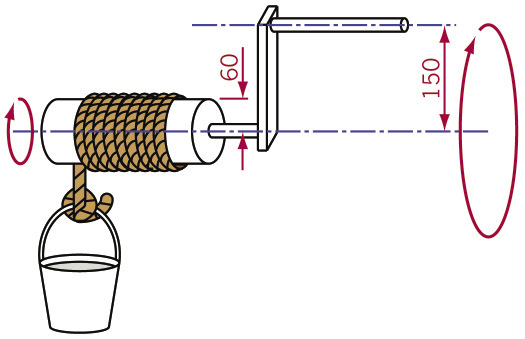
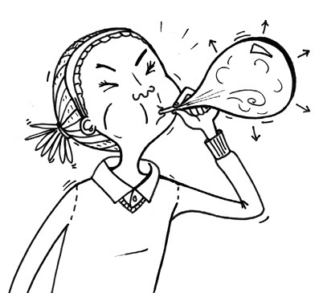

<div class="container">
  <div id="contents" class="col-md-12 main-content"><h1 xmlns="http://www.w3.org/1999/xhtml" id="toc-id-23">Mechanisms that change the type of movement</h1>

<b xmlns="http://www.w3.org/1999/xhtml">rotational movement</b>.<b xmlns="http://www.w3.org/1999/xhtml">reciprocating
movement.</b>
<p xmlns="http://www.w3.org/1999/xhtml" class="x--Body-box-no-indent">The word "reciprocate" comes
from the old Latin words "re" and "pro". "Re" means back and
"pro" means forward.</p>


<figcaption xmlns="http://www.w3.org/1999/xhtml">Figure 1: When you saw wood you make
a reciprocating movement.</figcaption>


<figcaption xmlns="http://www.w3.org/1999/xhtml">Figure 2: A wind pump converts a
rotating movement into a reciprocating movement.</figcaption>


<figcaption xmlns="http://www.w3.org/1999/xhtml">Figure 3: A steam driven locomotive
uses a crank-and-slider mechanism to turn the
wheels.</figcaption><p xmlns="http://www.w3.org/1999/xhtml">When a crank is part of a winch,
it changes a big rotational
movement with a small force into
a small rotational movement with
a big force. The longer the crank
arm is, the more mechanical
advantage it gives.</p>




<figcaption xmlns="http://www.w3.org/1999/xhtml">Figure 4: A simple hand-powered winch
used to lift a bucket of water</figcaption>

<b xmlns="http://www.w3.org/1999/xhtml">slider</b> is attached to the crank
by a <b xmlns="http://www.w3.org/1999/xhtml">connecting rod</b>.
The slider is normally round, and fits into a round hole. It
can only move sideways, not up or down.<b xmlns="http://www.w3.org/1999/xhtml">pivot</b> between the crank and the
connecting rod, and another <b xmlns="http://www.w3.org/1999/xhtml">pivot</b> between the connecting rod
and the slider. Both pivots change position when the mechanism
is working. The crank turns around an <b xmlns="http://www.w3.org/1999/xhtml">axle</b>. The axle never changes
position, it just turns.<b xmlns="http://www.w3.org/1999/xhtml">wheel</b>,
to make the wheel turn with it. Or the crank can be part of the
wheel.<p xmlns="http://www.w3.org/1999/xhtml">The way the crank works depends only on the
distance between the centre of the axle and the
centre of the pivot between the crank and the push
rod. This distance is called the <b>crank throw.</b> This is
shown on Figure 5.
</p>


<figcaption xmlns="http://www.w3.org/1999/xhtml">Figure 5: The different parts of a
crank-and-slider mechanism</figcaption>


<figcaption xmlns="http://www.w3.org/1999/xhtml">Figure 6: Different steps during the
operation of a crank-and-slider mechanism</figcaption><li xmlns="http://www.w3.org/1999/xhtml" class="x--Body-investigation-hanging--1-3- para-style-override-31">   How long is the crank throw in the mechanism in Figure 6?<hr/></li>
<li xmlns="http://www.w3.org/1999/xhtml" class="x--Body-investigation-hanging--1-3- para-style-override-37">How far is the movement of the slider from the furthest
position on the left to the furthest position on the right?
This can be called the "total sideways movement".<hr/></li>
<li xmlns="http://www.w3.org/1999/xhtml" class="x--Body-investigation-hanging--1-3- para-style-override-90">    If the crank throw was twice as long, how long would the total
sideways movement of the slider be?<hr/></li>
<li xmlns="http://www.w3.org/1999/xhtml" class="x--Body-investigation-hanging--1-3- para-style-override-95">
Will the slider ever stand still while the crank is
rotating?</li>
<b xmlns="http://www.w3.org/1999/xhtml">high pressure</b>. Imagine you are
blowing up a balloon. You have to create a high pressure of air
in your mouth to make the balloon bigger. The balloon becomes
bigger because the high pressure air moves the sides of the
balloon outwards. Steam at a high pressure can also move
things.


<figcaption xmlns="http://www.w3.org/1999/xhtml">Figure 7</figcaption>

<b xmlns="http://www.w3.org/1999/xhtml">piston</b>, and the hole inside
which the piston moves is called the <b xmlns="http://www.w3.org/1999/xhtml">cylinder</b>.<b xmlns="http://www.w3.org/1999/xhtml">valves</b>
to let in the hot steam on the right or the left of the
cylinder. The valves have to open and close at the right times.
Is there some mechanism that can do this? This is what you will
learn about in the next lesson.


<figcaption xmlns="http://www.w3.org/1999/xhtml">Figure 8: How a steam engine
works</figcaption><p xmlns="http://www.w3.org/1999/xhtml">A crank-and-slider mechanism can be used to
change rotational movement into reciprocal
movement, or it can be used to change reciprocal
movement into rotational movement. In other
words, if you move the crank, then the slider will
also move. And if you move the slider, the crank will
also move.</p>

<b xmlns="http://www.w3.org/1999/xhtml">cam</b> is a wheel that is not
round, or it is a round wheel that turns around an axle that is
not at the centre of the wheel.<b xmlns="http://www.w3.org/1999/xhtml">follower</b>. The rotational
movement of the cam is changed into the reciprocating movement
of the follower. The follower is in a <b xmlns="http://www.w3.org/1999/xhtml">sleeve</b>, so that it can move in
one direction only.<b xmlns="http://www.w3.org/1999/xhtml">driven</b> by an <b xmlns="http://www.w3.org/1999/xhtml">axle</b>, so that when the axle
rotates, the cam rotates. When the cam rotates, the follower
slides on the cam. The position of the follower depends on the
angle at which the cam is rotated.<p xmlns="http://www.w3.org/1999/xhtml" class="x--Body-box-no-indent">Do you remember the
difference between a driven wheel and a free-turning wheel
about which you learnt in the previous chapter?</p>


<figcaption xmlns="http://www.w3.org/1999/xhtml">Figure 9: The different parts of a
crank-and-slider mechanism, and different shapes of cams</figcaption>


<figcaption xmlns="http://www.w3.org/1999/xhtml">Figure 10: The movement of a valve as
a cam rotates</figcaption><tbody xmlns="http://www.w3.org/1999/xhtml"><tr class="Row-Column-226"><td>
<p class="x--Body-Text">rotation of cam</p>
</td>

<td>
<p class="x--Body-Text para-style-override-3">starting
position</p>
</td>

<td>
<p class="x--Body-Text para-style-override-3">1 eight
of a cam rotation</p>
</td>

<td>
<p class="x--Body-Text para-style-override-3">2 eights
of a cam rotation</p>
</td>

<td>
<p class="x--Body-Text para-style-override-3">3 eights
of a cam rotation</p>
</td>
</tr><tr class="Row-Column-226"><td>
<p class="x--Body-Text">rotation of cam in degrees</p>
</td>

<td>
<p class="x--Body-Text para-style-override-3">
0°</p>
</td>

<td>
<p class="x--Body-Text para-style-override-3">
45°</p>
</td>

<td>
<p class="x--Body-Text para-style-override-3">
90°</p>
</td>

<td>
<p class="x--Body-Text para-style-override-3">
135°</p>
</td>
</tr><tr class="Row-Column-226"><td>
<p class="x--Body-Text">distance that valve is open</p>
</td>

<td>
<p class="x--Body-Text para-style-override-3">0</p>
</td>

<td/>

<td/>

<td>
<p class="x--Body-Text para-style-override-3">2 mm</p>
</td>
</tr></tbody><li xmlns="http://www.w3.org/1999/xhtml" class="x--Body-investigation-hanging">Complete the table
above to show how far the valve is open at different positions
of the cam in Figure 10. Measure the distance that the valve is
open.</li>

<li xmlns="http://www.w3.org/1999/xhtml" class="x--Body-investigation-hanging">Which of the
pictures above show the valve at its highest position?<hr/></li>
<li xmlns="http://www.w3.org/1999/xhtml" class="x--Body-investigation-hanging">Which picture shows
the valve at its lowest position?<hr/></li>
<span xmlns="http://www.w3.org/1999/xhtml" class="Basic-Graphics-Frame">
</span> <p xmlns="http://www.w3.org/1999/xhtml">A cam can convert rotational to reciprocal
movement, but not the other way round</p>

<span xmlns="http://www.w3.org/1999/xhtml">
</span> <tbody xmlns="http://www.w3.org/1999/xhtml"><tr class="Row-Column-230"><td>
<p class="x--Body-Text para-style-override-3">4 eights
of a cam rotation</p>
</td>

<td>
<p class="x--Body-Text para-style-override-3">5 eights
of a cam rotation</p>
</td>

<td>
<p class="x--Body-Text para-style-override-3">6 eights
of a cam rotation</p>
</td>

<td>
<p class="x--Body-Text para-style-override-3">7 eights
of a cam rotation</p>
</td>

<td>
<p class="x--Body-Text para-style-override-3">one full
cam rotation</p>
</td>
</tr><tr class="Row-Column-230"><td>
<p class="x--Body-Text para-style-override-3">
180°</p>
</td>

<td>
<p class="x--Body-Text para-style-override-3">
225°</p>
</td>

<td>
<p class="x--Body-Text para-style-override-3">
270°</p>
</td>

<td>
<p class="x--Body-Text para-style-override-3">
315°</p>
</td>

<td>
<p class="x--Body-Text para-style-override-3">
360°</p>
</td>
</tr><tr class="Row-Column-230"><td/>

<td/>

<td/>

<td/>

<td/>
</tr></tbody><li xmlns="http://www.w3.org/1999/xhtml" class="x--Body-investigation-hanging--1-3-">The drawing
on the right uses red arrows to show the distance between the
centre and the edge of a snail cam at different angles of
rotation. Each arrow is rotated with 45° clockwise
from the previous arrow.

<p class="x--Body-investigation-hanging--1-3- para-style-override-18">
Measure the different arrows, from the shortest to the longest
and fill in your measurements in the table below.</p>


<figure>


<figcaption>Figure 11: A snail cam</figcaption></figure><table id="table-27" class="No-Table-Style"><tbody><tr class="Row-Column-234"><td>
<p class="x--Body-Text">position</p>
</td>

<td>
<p class="x--Body-Text para-style-override-3">1</p>
</td>

<td>
<p class="x--Body-Text para-style-override-3">2</p>
</td>

<td>
<p class="x--Body-Text para-style-override-3">3</p>
</td>

<td>
<p class="x--Body-Text para-style-override-3">4</p>
</td>

<td>
<p class="x--Body-Text para-style-override-3">5</p>
</td>

<td>
<p class="x--Body-Text para-style-override-3">6</p>
</td>

<td>
<p class="x--Body-Text para-style-override-3">7</p>
</td>

<td>
<p class="x--Body-Text para-style-override-3">8</p>
</td>

<td>
<p class="x--Body-Text para-style-override-3">9</p>
</td>
</tr><tr class="Row-Column-234"><td>
<p class="x--Body-Text">length</p>
</td>

<td/>

<td/>

<td/>

<td/>

<td/>

<td/>

<td/>

<td/>

<td/>
</tr></tbody></table><p/>
</li>
<li xmlns="http://www.w3.org/1999/xhtml" class="x--Body-investigation-hanging para-style-override-5">
Is there a pattern in the lengths of the arrows? How does
the pattern work?<hr/></li>
<li xmlns="http://www.w3.org/1999/xhtml" class="x--Body-investigation-hanging para-style-override-5">
What happens between position 9 and position 1?<hr/></li>
<span xmlns="http://www.w3.org/1999/xhtml" class="Basic-Graphics-Frame">
</span> <div xmlns="http://www.w3.org/1999/xhtml" class="Basic-Text-Frame frame-235">
<p class="x--Body-box-no-indent">Some cams are a round
wheel, but they do not rotate around the centre of the
wheel. These cams are called <b>eccentric cams</b>. They are
used on many modern bicycles.</p>

<p class="x--Body-box-no-indent">During a bicycle race, the
cyclists sometimes get flat or punctured tyres. They then
have to take the wheel off to remove the tyre before they
can fix the tyre. This takes a lot of time, and they'll
struggle to catch up with the other cyclists again.</p>

<p class="x--Body-box-no-indent">Many years ago, engineers
designed a mechanism with which you can quickly take a
wheel off a bicycle, without using any tools. This is
called a "quick release" mechanism.</p>

<p class="x--Body-box-no-indent">Today, more expensive
bicycles use quick release mechanisms on their wheels. They
also use a quick release mechanism to make it quick and
easy to change the height of the saddle. The photos below
and on the right show how a quick release mechanism uses an
eccentric cam to lock the saddle at the correct height.</p>
</div>


<figcaption xmlns="http://www.w3.org/1999/xhtml">Figure 12: A
quick-release mechanism is used to clamp theseat post to the
frame of this bicycle.</figcaption>


<figcaption xmlns="http://www.w3.org/1999/xhtml">Figure 13: The sides of the quick
release mechanism move or clamp closer together as the
eccentric cam is turned by the handle.</figcaption>


<figcaption xmlns="http://www.w3.org/1999/xhtml">Figure 14</figcaption>


<figcaption xmlns="http://www.w3.org/1999/xhtml">Figure 15: The
moving parts inside one cylinder of an engine</figcaption><li xmlns="http://www.w3.org/1999/xhtml" class="x--Body-investigation-hanging">Make a
three-dimensional artistic drawing of the crankshaft of a
one-cylinder engine. Use shading to make it more realistic.
First make a rough drawing, before you make your final neat
drawing.</li>

  </div>
</div>